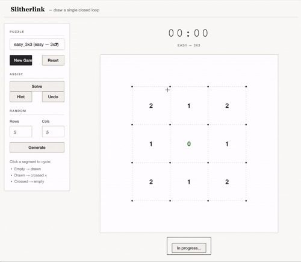

An R package for playing and solving Slitherlink logic puzzles, with a full interactive Shiny application.

Demo
What is Slitherlink?
Slitherlink is a logic puzzle played on a rectangular grid of dots. The goal is to draw segments between adjacent dots to form a single closed loop — no branches, no crossings, no dead ends. Numbers inside cells indicate exactly how many of the cell’s four edges belong to the loop.
+ + + +
2 1 2
+ + + +
1 0 1
+ + + +
2 1 2
+ + + +The unique solution for this 3×3 puzzle is the outer rectangle.
Installation
# Install from GitHub
devtools::install_github("marouanedaoudi/slitherlink-shiny")Or load locally from source:
devtools::load_all()Shiny app
run_app()Features:
| Button | Action |
|---|---|
| New Game | Load the selected puzzle |
| Reset | Restart the current puzzle |
| Solve | Fill in the complete solution |
| Hint | Reveal one correct segment |
| Undo | Revert the last action |
| Generate Random | Create a random solvable puzzle |
- Click near any segment to cycle its state: empty → drawn → crossed → empty
- Status indicator shows In progress, Constraint violated, or Puzzle solved!
- MM:SS timer starts on the first move or hint and freezes when the puzzle is solved
R API
Puzzles
list_puzzles() # browse the built-in library
g <- get_puzzle("medium_4x4") # load a puzzle (segments reset to empty)
g <- random_puzzle(n = 5, m = 5, seed = 42) # generate a random puzzleGrid manipulation
# Build a grid from a clue matrix (NA = unconstrained cell)
clues <- matrix(c(2, 1, 2,
1, 0, 1,
2, 1, 2), nrow = 3, byrow = TRUE)
g <- init_grid(clues)
# Toggle a segment (0 → 1 → -1 → 0)
g <- toggle_segment(g, type = "h", i = 1, j = 1) # horizontal
g <- toggle_segment(g, type = "v", i = 2, j = 3) # vertical
print(g) # ASCII display in the consoleValidation
check_clues(g) # no clue exceeded (in-progress check)
check_clues(g, strict = TRUE)# all clues exactly matched
check_loop(g) # segments form a single closed loop
is_solved(g) # full solution checkSolver
sol <- solve_grid(g) # constraint propagation + backtracking
is_solved(sol) # TRUEsolve_grid() returns NULL if no solution exists.
Grid representation
A slitherlink_grid object contains three matrices:
| Field | Dimensions | Meaning |
|---|---|---|
clues |
n × m | Clue values (NA = no clue) |
seg_h |
(n+1) × m | Horizontal segment states |
seg_v |
n × (m+1) | Vertical segment states |
Segment values: 0 = empty, 1 = drawn, -1 = crossed.
Built-in puzzles
| Name | Difficulty | Size |
|---|---|---|
easy_3x3 |
Easy | 3×3 |
easy_4x4 |
Easy | 4×4 |
medium_4x4 |
Medium | 4×4 |
medium_5x6 |
Medium | 5×6 |
hard_5x5 |
Hard | 5×5 |
hard_6x6 |
Hard | 6×6 |
hard_7x7 |
Hard | 7×7 |
Package structure
R/
grid.R # init_grid(), toggle_segment()
validation.R # check_clues(), check_loop(), is_solved()
puzzles.R # list_puzzles(), get_puzzle()
solver.R # solve_grid()
random_puzzle.R # random_puzzle()
app.R # run_app()
inst/shiny/app.R # Shiny application
tests/testthat/ # 77 tests
vignettes/ # Introduction vignetteDocumentation
Full reference and vignette: https://marouanedaoudi.github.io/slitherlink-shiny/